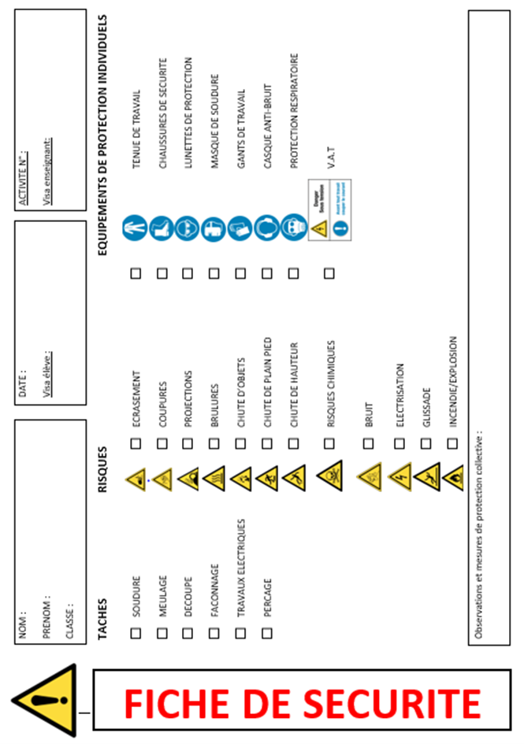
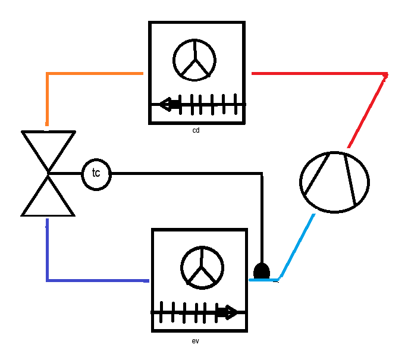

Thème / DomaineÉlectricité simple et cycle frigorifique
Module atelier S2-F2 · 4 hLe cycle sur machine réelle
SéquenceS2 · sem. 6 (rentrée 2026)
Nom________________
Prénom________________
Date________________
Positionnement01234
Mise en situation professionnelle
Ordre d'intervention n° OI-2026-S2F2-01 : le chef de chantier (votre professeur) vous confie une
machine frigorifique en fonctionnement du parc TP, pour un relevé de contrôle. Avant toute intervention,
l'entreprise demande toujours de vérifier le cycle sur la machine réelle : repérer les organes, relever
chaud/froid, lire la plaque signalétique. C'est exactement le geste que vous referez seul(e) la
semaine 7, au poste FROID de votre première évaluation É1 : ce module en est l'entraînement direct.
Aucune ouverture de circuit, aucune intervention sur le câblage aujourd'hui : on observe, on touche en
sécurité, on mesure, on lit, on transpose sur la croix.
Tâches
T8 Sécuriser son intervention sur site T12 Respecter les consignes de sécurité et protéger la zone de travail
Savoirs
S5.1 Systèmes thermodynamiques à détente directe prérequis : croix construite en S1-F2 · travaillé : augmenté (repérage machine, mesure, plaque)
Savoir-être
Sécurité d'une machine en fonctionnement sans rappel · rigueur du relevé · honnêteté de la mesure · autonomie croissante
Compétences (≤ 4)
ConfortementC2.4 Sécuriser l'intervention Découverte→ConfortementC4.5 Mesurer, comparer des grandeurs
Ce qui change depuis S1
En S1-F2, vous avez découvert le cycle : le professeur désignait les organes chauds et froids, vous
touchiez à pleine main gantée, et vous avez construit votre croix du frigoriste de zéro, sans la connaître
au départ. Aujourd'hui, vous connaissez déjà la croix : vous partez de la machine réelle pour la
retrouver (sens inverse). Vous cherchez seul(e) les 4 organes, sans qu'on vous les montre. Vous touchez
avec le dos de la main, uniquement dans les zones que le professeur autorise. Une vraie mesure au
thermomètre de sonde remplace l'impression au toucher. Et vous lisez, pour la première fois, une
plaque signalétique réelle.
Objectifs — je serai capable de…
repérer seul(e) les 4 organes de la croix du frigoriste sur une machine réelle en fonctionnement ;
mesurer, au thermomètre de sonde et en sécurité, des points chauds et froids du circuit ;
lire une plaque signalétique réelle et en extraire les informations utiles, sans jamais inventer une valeur ;
transposer mes repérages et mes mesures sur la croix du frigoriste, dans le respect de la convention absolue.
Prérequis — je sais déjà…
nommer les 4 organes de la croix du frigoriste : compresseur, condenseur, détendeur, évaporateur (S1-F2) ;
la convention de dessin : détendeur à gauche, compresseur à droite, condenseur en haut, évaporateur en bas ;
porter les EPI de l'atelier sans qu'on me le rappelle ;
avoir déjà observé et touché avec précaution une machine en marche, avec des gants (S1-F2).
Si la croix du frigoriste ne vous dit plus rien,
prévenez le professeur avant de commencer : un rappel court est possible pendant l'exercice au fil de l'eau.
Matériel
Ce document (TP élève) + crayon de papier, gomme
Tenue de travail complète (chaussures de sécurité, vêtements adaptés)
Une machine frigorifique du parc TP en fonctionnement (climatiseur split ou meuble/armoire frigorifique pédagogique, selon la machine du poste, à confirmer par le professeur)
Gants de protection thermique (fournis, à restituer en fin de séance)
Thermomètre à sonde(s) (type thermomètre numérique à sonde thermocouple, découvert d'après la fiche « thermomètre de sonde », 2nde TNE)
Fiche de relevés chaud/froid, à unités pré-imprimées (ce document, feuille 3)
Plaque signalétique de la machine du poste + 2 photos réelles de plaques (ce document, feuille 4)
Cadre de transposition sur la croix du frigoriste (ce document, feuille 5)
Sécurité — machine en fonctionnement (centrale ce jour)
Aujourd'hui, la machine que vous observez fonctionne réellement : elle a des
parties chaudes, des parties tournantes, et un circuit sous pression. Ces règles s'appliquent sans
exception, du début à la fin de la séance.
Risque
Parade
Brûlure légère au contact d'un organe chaud (ligne de refoulement, condenseur)
Ne jamais toucher une surface signalée chaude à main nue ni avec la paume. Toucher uniquement avec le dos de la main gantée, et seulement là où le professeur l'autorise.
Ventilateur ou pièce en mouvement (condenseur, évaporateur)
Ne jamais introduire les doigts ni un objet dans un ventilateur en mouvement, même à l'arrêt apparent.
Ouverture d'un circuit sous pression « pour voir »
Jamais ouvrir un raccord, une vanne ou un capot électrique : c'est un geste interdit, sans exception, quel que soit le motif.
Bruit du compresseur pendant l'observation
Rester à la distance indiquée par le professeur, ne pas s'approcher sans autorisation.
Manipulation du thermomètre de sonde près d'un organe chaud
Tenir la sonde par son câble ou sa poignée isolée, jamais par la pointe métallique en contact avec une surface chaude.
La bonne technique : toucher avec le dos de la main
Pour vérifier si une surface est chaude sans risque, on ne pose
jamais la paume ni les doigts en premier : on approche le dos de la main gantée, lentement, et on retire
aussitôt si la surface est trop chaude. Ce geste professionnel permet un retrait réflexe plus rapide qu'un
contact à pleine main. On ne l'utilise que dans les zones autorisées par le professeur : certaines parties
de la machine restent interdites au toucher, même avec cette technique.
Avant de commencer, complétez la fiche de sécurité à cocher ci-dessous (EPI
portés, zones autorisées rappelées) et faites-la viser par le professeur.

Fiche de sécurité à cocher — document CAP, F. Henninot.
🚨 En cas d'incident — coupez ou signalez immédiatement (arrêt d'urgence),
alertez le professeur, ne déplacez jamais un camarade blessé. En cas de brûlure légère, refroidissez sous le
point d'eau pendant plusieurs minutes puis prévenez le professeur. Gestes interdits : ne jamais
ouvrir un circuit ou un capot électrique ; ne jamais toucher hors des zones autorisées ; ne jamais actionner la
machine soi-même.
Placez-vous devant la machine en fonctionnement qui vous est confiée. Sans l'aide
du professeur, cherchez les 4 organes que vous connaissez déjà depuis la 1re année : le
compresseur, le condenseur, le détendeur et l'évaporateur. Repérez-les d'abord à
l'œil et à l'oreille (bruit, ventilateur, gros tuyau, petit tuyau), avant de toucher quoi que ce soit.
Organe
Où je l'ai trouvé (emplacement, repère)
Comment je l'ai reconnu (bruit, tuyau, ventilateur…)
Compresseur
Condenseur
Détendeur
Évaporateur
Observation 1 — Dans quel ordre le fluide frigorigène traverse-t-il les
4 organes lorsque la machine fonctionne normalement ? (numérotez de 1 à 4)
Compresseur
Condenseur
Détendeur
Évaporateur
n° ___
n° ___
n° ___
n° ___
Relevé guidé au thermomètre de sonde — chaud/froid
Le professeur vous indique, un point à la fois, où poser la sonde du thermomètre.
Mesurez et notez la valeur dans la case prévue. Ne touchez jamais les points marqués « interdit » : ils
sont réservés à la démonstration du professeur.
Point de mesure
Autorisé au dos de la main ?
Température relevée
Ressenti (chaud / tiède / froid)
Ligne de refoulement (sortie du compresseur)
☐ Oui ☐ Non
_____ °C
Air soufflé en sortie du condenseur
☐ Oui ☐ Non
_____ °C
Tube fin, juste avant le détendeur
☐ Oui ☐ Non
_____ °C
Air soufflé en sortie de l'évaporateur
☐ Oui ☐ Non
_____ °C
Ligne d'aspiration (retour vers le compresseur)
☐ Oui ☐ Non
_____ °C
Valeurs propres à la machine du poste, à
relever réellement — n'inventez jamais une valeur que vous n'avez pas mesurée.
Observation 2 — Entre quels deux points avez-vous mesuré le plus grand
écart de température ? Que pensez-vous que cela signifie sur ce qui se passe à cet endroit du circuit ?
JALON 2 · lecture de plaque signalétique — ≈ 30 min
Toute machine frigorifique porte une plaque signalétique (souvent sur le
compresseur ou le bâti) qui donne ses caractéristiques officielles. Localisez d'abord celle de votre
machine, recopiez ce qui est lisible, puis entraînez-vous sur 2 photos réelles pour savoir lire
n'importe quelle plaque le jour où vous en croiserez une autre en intervention.
Ma machine du poste
Information demandée
Valeur selon plaque signalétique
Marque / constructeur
Modèle / référence
Fluide frigorigène (type)
Charge de fluide (kg)
Tension d'alimentation (V)
Si une valeur est absente ou illisible, écrivez
« illisible » — n'inventez jamais une valeur.
Entraînement 1 — pompe à chaleur Daikin (unité extérieure)
Renseignement demandé
Votre réponse
Marque / constructeur
Modèle de l'unité extérieure
Année de fabrication
Tension d'alimentation
Type de fluide frigorigène et charge (kg)
Poids net (kg)
Entraînement 2 — climatiseur Mitsubishi Electric
Renseignement demandé
Votre réponse
Marque
Modèle
Tension et fréquence d'alimentation
Type de fluide frigorigène
Poids net (kg)
Photos réelles de plaques signalétiques, atelier CAP IFCA (F. Henninot).
TRANSPOSER — mes observations sur la croix du frigoriste
JALON 3 · transposition sur la croix — ≈ 40 min
Rappel de la convention absolue : quelle que soit la position réelle des
organes sur la machine, on dessine toujours la croix du frigoriste de la même façon.
La croix du frigoriste — convention à retenir : détendeur à GAUCHE ·
compresseur à DROITE · condenseur en HAUT · évaporateur en BAS.

Le même cycle, vu comme le circuit réel de la machine : les 4 organes reliés par leurs tuyauteries. Tu retrouves la disposition de la croix — condenseur en haut, évaporateur en bas, détendeur à gauche, compresseur à droite. Les couleurs distinguent le côté chaud (rouge, orange) du côté froid (bleus), comme observé en S1-F2. Source : F. Henninot.
Dans le cadre ci-dessous, dessinez la croix du frigoriste de votre machine :
placez les 4 organes selon la convention (pas selon leur position réelle sur la machine), et reportez, à côté de
chacun, la température que vous avez mesurée au point correspondant (feuille 3).
Ma croix du frigoriste, avec mes 4 organes et mes températures mesurées — convention : détendeur gauche, compresseur droite, condenseur haut, évaporateur bas
Question — D'après vos mesures, quelle moitié de la croix est la plus
chaude (compresseur → condenseur) et laquelle est la plus froide (détendeur → évaporateur) ? Ces deux moitiés
ont un nom : lequel, d'après ce que vous savez déjà (S1-F2) ?
SYNTHÈSE — ma trace écrite
Ce que je retiens de ce module :
Grille d'évaluation
Échelle FrigorX : 0 Non évalué · 1 Non acquis · 2 En cours d'acquisition · 3 Acquis · 4 Parfaitement maîtrisé. Statuts du jour : Confortement (C2.4) et Découverte→Confortement (C4.5), non remontés sur École Directe.
Compétence / savoir-être
Ancrage
0 Non évalué
1 Non acquis
2 En cours d'acquisition
3 Acquis
4 Parfaitement maîtrisé
C2.4 Sécuriser l'intervention
sur T8 · T12 · S5.1
Compétence non observée ce jour.
Touche une surface hors zone autorisée ou sans le dos de la main, malgré rappel.
Applique le toucher sécurisé avec l'aide d'un rappel du professeur.
Applique seul(e) le toucher sécurisé (dos de la main, zones autorisées), sans geste interdit.
Comme « Acquis », et rappelle spontanément la règle à un camarade.
C4.5 Mesurer, comparer des grandeurs
sur T8 · S5.1
Compétence non observée ce jour.
Fiche de relevés incomplète ou valeurs non mesurées (inventées), malgré aide et rappel.
Relevés obtenus avec l'aide du professeur (positionnement de la sonde, lecture de l'écran).
Relève seul(e) les 5 points de mesure, complète sa fiche et lit correctement la plaque signalétique.
Comme « Acquis », et interprète correctement l'écart de température le plus important du circuit.
Savoir-être — sécurité, rigueur, honnêteté
observation continue
Non observé ce jour.
EPI ou zones autorisées non respectés malgré rappel.
Sécurité globalement respectée, quelques rappels nécessaires.
EPI et consignes respectés sans rappel, relevés honnêtes, aucune valeur inventée.
Comme « Acquis », et aide un pair à repérer un organe ou une zone de mesure.
Ce document complété (repérage, relevés, plaques signalétiques, croix, questions répondues)
La fiche de sécurité à cocher, signée
Le carnet de bord, avec au moins une ligne rédigée sur la journée
D'après : « Utilisation et
mesure du thermomètre de sonde — découverte évaporateur, comment ça » (F. Henninot, 2nde TNE, principe du relevé
chaud/froid au thermomètre à sonde, adapté et simplifié au niveau CAP 1re année — on repère, on ne
diagnostique pas) ; démarche de repérage inspirée de « Diagnostic de la machine et état des lieux » (S10, 2A CAP
IFCA, F. Henninot), radicalement simplifiée pour une 1re approche ; photos de plaques signalétiques
Daikin et Mitsubishi Electric (F. Henninot) ; schéma « La croix du frigoriste » (F. Henninot) ; document
S1-F2 (F. Henninot, 2026).